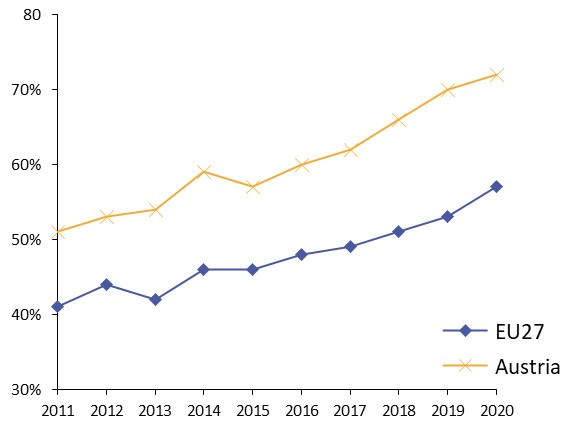
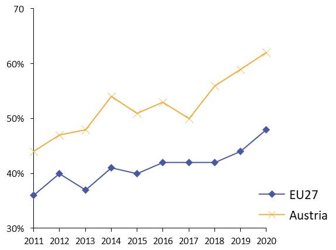
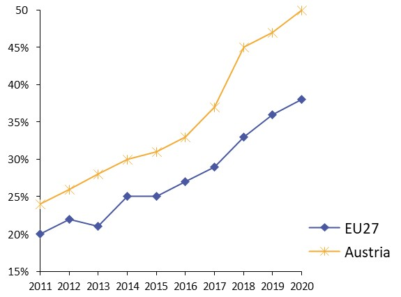
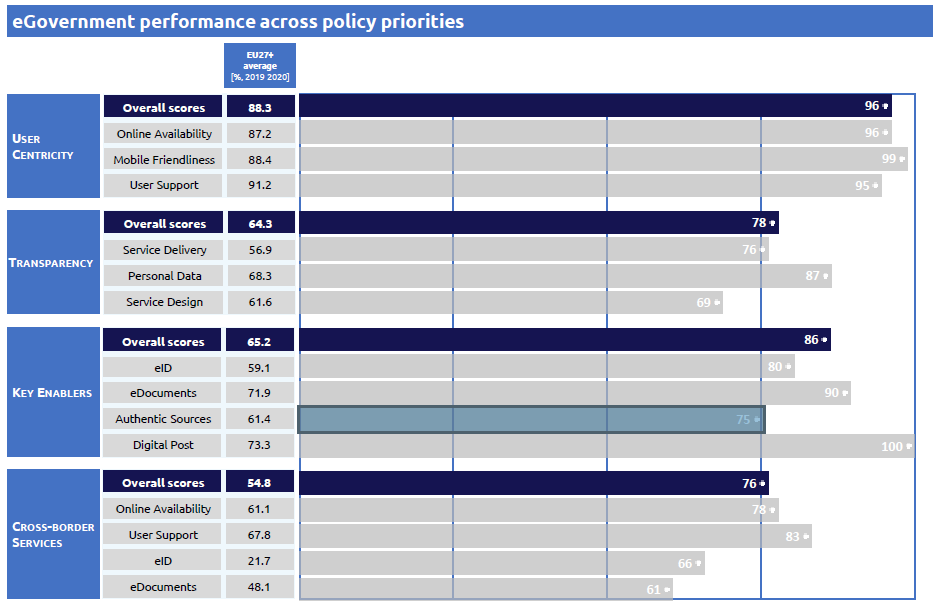

Digital Public Administration factsheet 2021
Austria
Digital Public Administration factsheet 2021
Table of Contents
2 Digital Public Administration Highlights 10
3 Digital Public Administration Political Communications 13
4 Digital Public Administration Legislation 18
5 Digital Public Administration Governance 25
6 Digital Public Administration Infrastructure 32
7 Cross-border Digital Public Administration Services 39
Please note that the data collection exercise for the update of the 2021 edition of the Digital Public Administration factsheets took place between March and June 2021. Therefore, the information contained in this document reflects this specific timeframe.
1
Country
Profile
Country Profile
Basic data
Population: 8 879 920 inhabitants (2019)
GDP at market prices: 377 297.2 million Euros (2020)
GDP per inhabitant in PPS (Purchasing Power Standard EU 27=100): 124 (2020)
GDP growth rate: -6.3% (2020)
Inflation rate: 1.4% (2020)
Unemployment rate: 5.4% (2020)
General government gross debt (Percentage of GDP): 83.9 % (2020)
General government deficit/surplus (Percentage of GDP): -8.9% (2020)
Area: 83 879km2
Capital city: Vienna
Official EU language: German
Currency: Euro
Source: Eurostat (last update: 23 July 2020)
Digital Public Administration Indicators
The following graphs present data for the latest Digital Public Administration Indicators for Austria compared to the EU average. Statistical indicators in this section reflect those of Eurostat at the time the factsheet is being prepared.
Percentage of individuals using the internet for interacting with public authorities in Austria  | Percentage of individuals using the internet for obtaining information from public authorities in Austria  | ||
Percentage of individuals using the internet for downloading official forms from public authorities in Austria  | Percentage of individuals using the internet for sending filled forms to public authorities in Austria  | ||
Interoperability State of Play
In 2017, the European Commission published the European Interoperability Framework (EIF) to give specific guidance on how to set up interoperable digital public services through a set of 47 recommendations. The picture below represents the three pillars of the EIF around which the EIF Monitoring Mechanism was built to evaluate the level of implementation of the EIF within the Member States. It is based on a set of 68 Key Performance Indicators (KPIs) clustered within the three main pillars of the EIF (Principles, Layers and Conceptual model), outlined below.
Source: European Interoperability Framework Monitoring Mechanism 2019
Source: European Interoperability Framework Monitoring Mechanism 2020
Source: European Interoperability Framework Monitoring Mechanism 2020
Source: European Interoperability Framework Monitoring Mechanism 2020
eGovernment State of Play
The graph below presents the main highlights of the latest eGovernment Benchmark Report, an assessment of eGovernment services in 36 countries: the 27 European Union Member States, as well as Iceland, Norway, Montenegro, the Republic of Serbia, Switzerland, Turkey, the United Kingdom, Albania and Macedonia (referred to as the EU27+).
The study evaluates online public services on four dimensions:
- User centricity: indicates the extent to which a service is provided online, its mobile friendliness and its usability (in terms of available online support and feedback mechanisms).
- Transparency: indicates the extent to which governments are transparent about (i) the process of service delivery, (ii) policy making and digital service design processes and (iii) the personal data processed in public services.
- Cross-border services: indicates the extent to which users of public services from another European country can use the online services.
- Key enablers: indicates the extent to which technical and organizational pre-conditions for eGovernment service provision are in place, such as electronic identification and authentic sources.
The 2021 report presents the biennial results, achieved over the past two years of measurement of all eight life events used to measure the above-mentioned key dimensions. More specifically, these life events are divided between six ‘Citizen life events’ (Career, Studying, Family life, measured in 2020, and Starting a small claim procedure, Moving, Owning a car, all measured in 2019) and two ‘Business life events’ (Business start-up, measured in 2020, and Regular business operations, measured in 2019).
Source: eGovernment Benchmark Report 2021 Country Factsheet
Digital Public Administration Highlights
2
Digital Public Administration Highlights
Digital Public Administration Political Communications
The Vision provides the necessary framework for the Digitalisation Strategy, which will in turn consist of several strategic action plans focusing on selected priority topics . In 2020, on the topics of data chances, resilience and economic growth have already been drawn up. Further thematic action plans will follow in 2021.
Digital Public Administration Legislation
On 1 January 2020, the right to electronic correspondence with the public administration entered into force (eGovernment-Act), recognising in this way digital government as a right of the citizens. As a result, they have now the opportunity of handling their contacts with the authorities electronically and entirely without a break in media.
Moreover, the regulatory framework ‘The Digital Office’ to amend the existing legal frame is currently being developed. It aims at creating a contemporary legal framework for the development, testing and application of new/selected inter-ministerial electronic administrative processes and services and ensuring a broad stakeholder involvement. The framework is being developed in several phases, the first one is planned to be finalized in 2021.
Digital Public Administration Governance
Digital Public Administration Infrastructure
Digital Public Administration Political Communications
3
Digital Public Administration Political Communications
Specific political communications on digital public administration
Digitisation Strategy
Fostering the digital transformation in selected priority areas and improving user‑centric, modern eGovernment services are among the main objectives within the strategic action plans. Each action plan contains concrete measures and implementation steps on a specific topic. As of 2020, on the topics of data chances and data economy, resilience and economic growth had already been drawn up. Further thematic action plans will follow in 2021. The process for the digital strategic action plans is streamlined in close cooperation with the Chief Digital Officer (CDO) taskforce of the federal government.
eGovernment Vision 2020 (2009–2020)
Federal eGovernment Strategy
Berlin Declaration on Digital Society and Value-Based Digital Government
Interoperability
More specifically, the purpose of the AIF was:
- to promote and support the delivery of Austrian public services by fostering cross-border, cross-organisation and cross-sector interoperability;
- to guide public administrations in their work to provide Austrian public services to businesses and citizens; and
- to complement and tie together the various Organisational Interoperability Frameworks (OIFs) at Austrian level.
Once-Only principle
The Digital Office regulatory framework amends the existing legal framework in order to create a new legal basis for the development, testing and application of new/selected inter-ministerial electronic administrative processes and services (broad stakeholder involvement is planned to be finalised in 2021). This will further support the implementation of the Once-Only principle.
Key enablers
Access to public information
Open Government Data
eID and Trust Services
eID
Security aspects
National Cybersecurity Strategy
Interconnection of base registries
Register- und Systemverbund
eProcurement
Public Tenders
Domain-specific political communications
No political communication has been adopted in this field to date.
Emerging Technologies
Blockchain, Virtual Reality, Augmented Reality and Smart Cities
Blockchain, virtual reality, augmented reality and smart cities are, among others, important pieces of the puzzle of the vision for a comprehensive digitisation strategy and for the strategic digital action plans currently being developed by the Ministry for Digital and Economic Affairs. As of 2020, initial plans on the topics of data chances, resilience and economic growth had already been drawn up. Further thematic plans will follow.
Digital Public Administration Legislation
4
Digital Public Administration Legislation
Specific legislation on digital public administration
eGovernment Act
The eGovernment Act, the centrepiece of Austrian eGovernment law, entered into force on 1 March 2004 and was last amended on 31 December 2020. Austria was one of the first EU Member States to adopt a comprehensive legislation on eGovernment. This act is the core of Austrian laws on eGovernment. It serves as the legal basis for eGovernment instruments and components. Many mechanisms - such as the Citizen Card (Bürgerkarte; in the future, eID or ID Austria), sector-specific personal identifiers and electronic delivery - can also be put to use in the private sector.
The most important principles of eGovernment law are:
- freedom of choice for users in selecting the means of communication when contacting public authorities; and
- security and improved legal protection provided by appropriate technical measures such as the Citizen Card.
The recent amendments to the eGovernment Act, which entered into force on 31 December 2020, were made in consideration of the technical developments associated with a simplified smartphone-based use of the eID as well as to increase the data quality and widen the use of the eID. They also introduced the legal basis for a ‘digital’ driver’s license for eID holders.Right to electronic correspondence of citizens with the public administration (according to Article 1a of the eGovernment Act)
On 1 January 2020, the right to electronic correspondence with authorities entered into force. Thanks to that, citizens may now handle their contacts with the authorities entirely electronically.
General Administrative Procedures Act
The General Administrative Procedures Act lays down the basic principles of administrative procedures. Article 13 is relevant to eGovernment in that it regulates the ways in which public authorities and citizens can communicate with each other, such as the transmission of applications by email or web forms. The authority’s website specifies the addresses to which application forms can be sent, whether an electronic signature is needed and which formats are recommended or required for the application.
Since 1 January 2011, documents issued by public authorities require a handwritten signature, certification or official signature. All electronic copies of paper documents from public authorities are required to have an official signature. The official signature is an advanced electronic signature including specific elements to certify the official origin of the document.
Web-Accessibility Act
The Austrian Web-Accessibility Act entered into force on 23 July 2019 and implements the Web Accessibility Directive. It defines the accessibility requirements for federal websites and mobile applications so that they are more accessible for users, especially for people with disabilities. In addition to the federal level, nine different acts implement the Web Accessibility Directive in the respective federal states.
The competent authority on the federal level is the Austrian Research Promotion Agency (FFG), which monitors the compliance of websites and mobile applications of public sector bodies (on federal level and also for seven out of the nine federal states) in Austria with the accessibility requirements.
Interoperability
eGovernment Act - Once-Only Principle
Austria’s eGovernment Act contains a provision (Article 17(2)) on the Once-Only principle, which states that public authorities are obliged, pursuant to their technical possibilities and in compliance with the requirements stipulated by law, to draw on the available data of the person concerned from public registers of a client under public law. Thus, certain information (birth certificates, proof of citizenship, proof of residency or documents from the Commercial Registry) need no longer be provided by the person concerned but can, with the person’s consent or with legal authorisation, be directly requested by the authority from an electronic register. The public authority’s responsibility to enable queries in their registers in no way increases their right to release information, since they are based solely on existing authorisations.
Key enablers
Access to public information
Constitutional Law on Access to Information
The Constitutional Law on Access to Information (Auskunftspflichtgesetz) became effective on 1 January 1988. This law contained provisions on access to public information at the federal and regional level. It stipulated a general right of access and obliged federal authorities to answer questions regarding their areas of responsibility, insofar as this did not conflict with a legal obligation to maintain secrecy. However, it did not permit citizens to access documents, but only to receive answers from the government on the content of information. The nine Austrian Länder enacted laws that placed similar obligations on their authorities.
Reuse of Information Act
Directive 2003/98/EC on the re-use of public sector information (PSI Directive) was transposed into national law at federal level through the Reuse of Information Act (Informationsweiterverwendungsgesetz, IWG) in November 2005. To achieve the complete transposition of the PSI Directive, pertinent legislation was passed in all nine Austrian Länder. On 7 September 2007, Austria notified the last pending implementation (State Law of Salzburg), thereby completing transposition of the PSI Directive. An amendment regarding the transposition of the revised Open Data and PSI Directive is currently in preparation.
eID and Trust Services
The SourcePIN Register Regulation specifies the tasks of the SourcePIN Register Authority which are necessary for the implementation of the Citizen Card concept and the cooperation with its service providers. The main provisions deal with the following:
- the process for creating identity links, in particular the duties of registration offices, the validation of identity and the identity link dataset;
- the transformation of sector-specific personal identifiers (ssPIN) into ssPINs from other sectors, generating ssPINs for certain mandate relationships, and the configuration of data applications from the public sector controller; and
- the electronic presentation and verification of mandate relationships as pertains to the Citizen Card concept. One of the remarkable achievements of the Citizen Card concept is the ability to mandate relationships electronically. The SourcePIN Register Authority signs or seals the mandate dataset and thus prevents forgery of such datasets stored on Citizen Cards. The SourcePIN Register Authority enables users to view and revoke mandates online.
An amendment of the SourcePIN Register Regulation and the Supplementary Register Regulation regarding the transition from the current Citizen Card system to ID Austria (eID) is currently in preparation.
eGovernment Sector Delimitation Regulation
For the purpose of generating ssPINs, each public sector data application needs to be assigned to a sector of State activity. The eGovernment Sector Delimitation Regulation defines the sectors and the sector identifiers.
Supplementary Register Regulation
The Supplementary Register Regulation plays an important role in the implementation of the Citizen Card concept as it enables natural persons and other involved parties, who, due to legal restrictions, are not permitted to be entered into the primary registers, to be registered in the supplementary register.
The Supplementary Register is comprised of two registers: one for natural persons and one for other concerned parties. The eGovernment Act allows the SourcePIN Register Authority to take over the duties of service provider from the Ministry of Interior for the supplementary register for natural persons and from the Ministry of Finance for the second supplementary register.
An amendment of the SourcePIN Register Regulation and the Supplementary Register Regulation regarding the transition from the current Citizen Card system to ID Austria (eID) is currently in preparation.
Signature and Trust Services Act
Through the creation of a new EU-wide harmonised legal framework for trust services, the Signature and Trust Services Act (SVG) was rescinded and a new accompanying law implementing the Regulation on electronic identification and trust services (eIDAS Regulation) was issued on the topic of trust services.
The SVG regulates those areas in which the directly applicable eIDAS Regulation gives Member States the possibility of issuing national regulations. In particular, this concerns regulations or specifications in the areas of trust service providers, supervision, formal aspects, liability and penalties in the event of non-compliance with the specifications of the eIDAS Regulation. Although the SVG applies to all trust services, the creation, validation and preservation of electronic signatures continue to be the core. It therefore continues to be possible to sign contracts electronically with an electronic signature with the same effect as if the contract were signed by hand. In addition, an important step for consumer protection was made with the SVG: companies can no longer exclude in hidden clauses the acceptance of the electronic signature and thus, for example, prevent electronic terminations of subscriptions.
The last amendments to the act, made on 17 May 2018 and 27 December 2018, regarded the General Data Protection Regulation (GDPR).
Security aspects
Security of Network and Information Systems Act
The Security of Network and Information Systems Act was adopted on 28 December 2018 as the transposition of the Directive concerning measures for a high common level of security of network and information systems (NIS Directive).
Data Protection Act
The Austrian Data Protection Act (Datenschutzgesetz 2000; DSG 2000, Federal Law Gazette I No. 165/1999) came into effect on 1 January 2000. The act, which implements Directive 95/46/EC on data protection, provides for a fundamental right to privacy with respect to the processing of personal data, which entails the right to information, rectification of incorrect data and removal of unlawfully processed data. It regulates the pre-conditions for the lawful use and transfer of data, including mandatory notification and registration obligations with the Data Protection Commission. Furthermore, it provides for judicial remedy in case of breach of its provisions.
The Data Protection Act was amended in 2017, in particular as a result of the adjustment to Regulation No. 2016/679 on the protection of natural persons with regard to the processing of personal data and on the free movement of such data and repealing Directive 95/46/EC (GDPR). These amendments entered into force on 25 May 2018.
The last amendment to the act, made on 15 January 2019, regarded the competences of the Federation and the provinces in the field of data protection.
Interconnection of base registries
Central Commercial Registry
The legal bases for the Central Commercial Registry (ZGW) are the Commercial Code (Unternehmensgesetzbuch, UGB) and the Commercial Registry Act (Firmenbuchgesetz, FBG). The latter does not exactly provide a clear definition, but Article 1 states that the Commercial Registry consists of the general ledger and a collection of documents. The registry is used to record and disclose facts which are to be entered under this act or other legal regulations. The act includes information such as which entities are intended to be registered in the general ledger, the collection of documents, the notification requirements, the database of the Commercial Registry and judicial administration measures.
Central Civil Registry
The main legislation for the (ZPR) is the Civil Status Act of 2013, Section 2, Articles 43-45, which pleads the Central Civil Registry as a public registry. Moreover, it states that the Civil Status Authorities may only use personal data when this is necessary to fulfil the tasks assigned to them. The act also provides information regarding the use of the data from the registry, queries, certificates, the structure of the registry, and the keeping and exhibition of the documents.
Land Registry
The main piece of legislation underpinning the Land Registry is the General Land Registry Law (GBG), which, however, does not provide a clear definition. The Land Registry is public and, therefore, anyone may access it and obtain extracts in the presence of an official. The law also governs the types of registration, the information regarding the certificates, the effect of the registration, the rectification of data, etc.
Central Registry of Vehicles
In the case of the Central Registry of Vehicles (KZR), the main law is the Motor Vehicles Act (KFG, 1967), which is a very extensive law covering everything related to motor vehicles.
Central Registry of Residents
For the Central Registry of Residents (ZMR), the most relevant pieces of legislation are Articles 16, 16a and 18 of the Notification Act (MeldeG), and Articles 15 and 17 of the Registration Act Implementing Regulation (MeldeV). The Notification Act states that the Central Registry is public and should be managed as a joint information system, and provides details on the authorised use of data obtained from it. The second act specifies the administrative charges.
eProcurement
Federal Procurement Act
The new Federal Procurement Act (Bundesvergabegesetz, BVergG 2018) was adopted on 20 August 2018 and substituted the Federal Procurement Act which entered into force on 1 February 2006, replacing the Federal Procurement Act 2002 and repealing the eProcurement Regulation 2004. The new Federal Procurement Act 2018 finally transposed all the EU public procurement directives, including their provisions regarding eProcurement, into national law.
eInvoicing
The provisions of Section 5 of the Austrian Information and Communication Technologies Consolidation Act of 2012 mandated that all contracting partners of the federal government, including foreign contracting partners, must submit only structured electronic invoices for the provision of goods and services to government departments. eInvoicing is mandatory only for the federal government, with a few exceptions.
Austria mandates the use of the Federal Service Portal, the central processing eInvoicing platform of the federal government, to receive eInvoices. The portal provides the authentication services necessary for the submission of eInvoices and does not require further use of the electronic signature.
Domain-specific legislation
Service of Documents Act
The Service of Documents Act, last amended on 27 December 2018, governs the delivery of all documents, such as official notices, which government authorities are required by law to send out.
In both electronic and paper-based circumstances, a differentiation is made between deliveries that require proof of delivery, by which the recipient confirms the delivery with a signature, and deliveries where no proof is required. The proof of delivery is carried out through an electronic delivery service. This service is available from delivery service providers approved by the Minister for Digital and Economic Affairs. A list of these delivery service providers is published by the Ministry online. The service allows customers (citizens and businesses) to register with their Citizen Card to confirm that they want to receive administrative documents electronically. Registering with a delivery service is sufficient notice in order to receive administrative documents. However, the use of an electronic delivery service is not obligatory.
Since 2019, the display module MyPostbox (meinpostkorb), in accordance with Article 37b of the Service of Documents Act, bundles documents from different delivery systems into a common view and allows for a single point of registration. This service is available through registration to the platform oesterreich.gv.at and through the app Digitales Amt, as well as for businesspeople in the Business Service Portal.
Research Organisation Act
The Research Organisation Act was amended on 16 May 2018 in order to facilitate the use of information in public registers for research.
Delivery Service Regulation
The Delivery Service Regulation further defines the admission standards that are given in Article 30 of the Service of Documents Act. These standards include criteria for assessing the technical and organisational ability of delivery service providers and, in particular, the reliability of data protection aspects. The technical requirements that are to be fulfilled by delivery services are contained in an annex to the Delivery Service Regulation and are to be published online.
The Delivery Forms Regulation defines the forms for the first and second notifications, which are sent electronically, as well as for the third and final notification, which are sent by postal delivery to the recipient’s address if one has been provided.
Austrian Deregulation ActOn 12 April 2017, the 2017 Austrian Deregulation Act was published, aiming to substantially reduce administrative burdens for citizens within the public administration.Health Telematics Law
The Health Telematics Law, amended on 14 June 2018 and again on 14 August 2018, was put forward by the Federal Ministry of Health to secure the transmission of sensitive patient data. The law articulated security measures already contained in the Data Protection Law of 2000. The government developed the strategy in this field together with the public administrations, as well as regional and local authorities.
eCommerce Act
The eCommerce Act (eCommerce Gesetz, ECG), which came into force on 1 January 2002, implemented Directive 2000/31/EC on electronic commerce. The act dealt with certain aspects of information society services. According to the act, such information society services are, inter alia, online distribution, online information, online advertisement, access functionalities and search engines. The act applied to virtually all services provided on the internet. It established the principles of freedom of service provision and country of origin, and provided for certain information obligations for providers of information society services for the benefit of their (potential) customers.
Emerging technologies
Digital Office Regulatory Framework
The Digitales Amt (Digital Office) project was launched with a decision of the Austrian Council of Ministers of 15 January 2019 as a further important step to ensure that citizens' administrative procedures, as well as their contact with public authorities, can take place fully electronically. The federal government focuses on creating a modern legal framework for the development, testing and implementation of new/selected inter-ministerial electronic administrative processes and services (with broad stakeholder involvement).
Digital Public Administration Governance
5
Digital Public Administration Governance
National
Policy
Federal Minister for Digital and Economic Affairs
Margarete Schramböck Federal Minister for Digital and Economic Affairs Contact details: Federal Ministry for Digital and Economic Affairs Stubenring 1, A-1010 Wien E-mail: service@bmdw.gv.at Source: http://www.bmdw.gv.at/ |
Maria Ulmer Federal Chief Digital Officer Director General for Digitisation and eGovernment at the Federal Ministry for Digital and Economic Affairs Contact details: Federal Ministry for Digital and Economic Affairs Stubenring 1, A-1010 Wien E-mail: service@bmdw.gv.at Source: http://www.bmdw.gv.at/ | |
Reinhard Posch Federal Chief Information Officer Chairman of the Platform Digital Austria Scientific Director of the Secure Information Technology Centre - Austria (A-SIT) Contact details: Federal Ministry for Digital and Economic Affairs Stubenring 1, A-1010 Wien Tel. : +43 1 711 00 802890 E-mail: reinhard.posch@bmdw.gv.at Source:https://www.bmdw.gv.at/en/Topics/Digitalisation/In-administration/Platform-Digital-Austria.html |
Wolfgang Ebner Chief Digital Officer of the Ministry for Digital and Economic Affairs Head of the Directorate ‛Digitisation Policy and Innovationʼ President of the Secure Information Technology Centre - Austria (A-SIT) Contact details: Federal Ministry for Digital and Economic Affairs Hintere Zollamtsstraße 2B, A-1030 Wien Tel. : +43 1 711 00 802710 E-mail: wolfgang.ebner@bmdw.gv.at |
Ferdinand Scheidbach Head of the Directorate ‛eGovernment Federal Government/Public Administrationʼ Contact details: Federal Ministry for Digital and Economic Affairs Stubenring 1, A-1010 Wien Tel. : +43 1 711 00 805194 E-mail: ferdinand.scheidbach@bmdw.gv.at |
Peter Kustor Head of the Directorate ‛International and Legal Affairs and eGovernment Strategyʼ Contact details: Federal Ministry for Digital and Economic Affairs Vordere Zollamtsstraße 5, A-1030 Wien Tel. : +43 1 711 00 802860 E-mail: peter.kustor@bmdw.gv.at Source: http://www.bmdw.gv.at/ |
Coordination
Chief Digital Officer Taskforce
The government programme defined digital development as an interdisciplinary issue. To coordinate innovation and digitisation issues between Ministries and work on a nationwide innovation and digitisation strategy, a Chief Digital Officer (CDO) was appointed in each Ministry.
The CDOs’ task is to optimise the coordination of digitisation measures between the different Ministries. Through a coordinated approach, goals such as further automating processes or providing improved digital services can be realised more efficiently.
The Federal CDO and CDO of the Federal Ministry for Digital and Economic Affairs is the head of General Directorate I (Digitisation and eGovernment), Mag. Maria Ulmer.
The communication platform ‘eGovernment reference server’ is the joint communication platform for the federal government, the provinces, the municipalities, the communities and the different partners concerning eGovernment topics.
Implementation
Federal Ministries
Even though overall coordination of ICT and eGovernment policies and activities lies within the competence of the Federal Ministry for Digital and Economic Affairs, the different federal Ministries and agencies are responsible for implementing their own projects.
Directorate ʻInternational and Legal Affairs and eGovernment Strategyʼ
The eGovernment Innovation Centre (eGovernment Innovations Zentrum, EGIZ) was founded in autumn 2005 as part of a consolidation of the bodies in charge of ICT and eGovernment. EGIZ consists of a research group that investigates innovative technologies and solutions for eGovernment, and represents a platform and network for research activities with respect to eGovernment solutions. Under this cooperation, both groups (EGIZ for research and the ICT Strategy Unit for implementation) focus on their respective duties. In addition, the centre allows for closer collaboration between research and application.
Support
Secure Information Technology Centre
Interoperability coordination
Base registry coordination
Ministry of Interior
The Ministry of Interior is responsible for coordinating and managing the following base registries: Central Registry of Residents (ZMR), Central Civil Registry (ZPR), Central Civil Status and Nationality Registry, Central Registry of Vehicles (KZR), Central Registry of Associations and Commercial Registry.
Ministry of Justice
Among other responsibilities, the Ministry of Justice is tasked with coordinating and managing the Land Registry.
Federal Ministry for Digital and Economic Affairs
The Ministry for Digital and Economic Affairs is responsible for coordinating the Central Commercial Registry.
Audit
Court of Audit
Data Protection
Data Protection Authority
Subnational (federal, regional and local)
Policy
Coordination
eGovernment Working Group of the Federal, Regional and Local Authorities
Implementation
Regional and Municipal Governments
The responsibility for implementation lies with the individual states (Länder) and municipal governments.
Support
Some 40 technical committees explore innovative measures and programmes adopted by towns and communities, issue statements on new legislation and discuss the implementation of new policies. eGovernment is currently one of their main focuses.
Interoperability coordination
No responsible body has been reported to date.
Base registry coordination
Federal Ministry for Digital and Economic AffairsThe Ministry for Digital and Economic Affairs develops the legal and organizational‑technical framework conditions for the establishment of a register and system network at federal level (see above the Decision of the Council of Ministers of 6 October 2020). The base registers (Central Registry of Residents, Central Civil Status and Nationality Registry, etc.) are also the responsibility of the federal government (Ministry of the Interior, etc.).
Audit
Data protection
No responsible body has been reported to date.
Digital Public Administration Infrastructure
6
Digital Public Administration Infrastructure
Portals
National Portals
Oesterreich.gv.at (former HELP.gv.at)
The Digital Office App was launched to facilitate a centralised, mobile and easy access for citizens to the most important administrative services, as an important step to allow the use of eGovernment anytime and anywhere. The Digital Office App is planned to be expanded into an ID platform, including new functionalities (e.g. electronic driving licence or registration certificate).
Voting Card Application
The voting card application is the new central election system of the federal government used by the majority of the municipalities. Launched at the end of 2020, it can be used for different elections, such as the National Council, the State Parliament or the election of the federal President. The service can be used both via the website and via the mGovernment solution ‘Digital Office App’.
Open Government Data Metaportal (data.gv.at)
FinanzOnline Portal
GESUNDheit.gv.at Portal
The guiding principle of the Health Portal is to provide information to people in order to ensure and expand their participation and choices in healthcare (i.e. patient empowerment). Accordingly, this portal (My Electronic Health Records) provides to citizens quality-assured information about the healthcare system and other benefits. Besides medical information, the portal also contains information on the structure and organisation of health services.
ICT Security Portal
Justice Online
Subnational Portals
No particular infrastructure in this field has been reported to date.
Networks
Trans European Services for Telematics between Administrations
Data Exchange
In 2008 and 2009, the first two privately run delivery services that complied with legal regulations and technical specifications for electronic delivery became operational. Currently, there are five privately run delivery services on the market.
In the future, official notifications will mainly be sent by electronic means. The new electronic delivery system - which can be seen as an evolution of the old system - was launched on 1 December 2019. The new system brings many advantages to citizens, businesses and public authorities. Just like the letterbox in the paper world, recipients only need one system to receive official notifications as well as private mail in the electronic world. This central system is called MyPostbox (meinpostkorb). The revised electronic delivery offers great saving potential for public authorities, citizens and businesses (e.g. postage costs, printing costs and time). The display module MyPostbox bundles documents from different delivery systems into a common view and allows for a single point of registration. This service is available through registration to the platform oesterreich.gv.at and through the app Digitales Amt, as well as for businesspeople in the Business Service Portal.
Electronic File System
eID and Trust Services
Portal Group
The Portal Group is a link-up of administrative portals and the basic infrastructure for the authentication and authorisation of public sector employees when accessing restricted online resources. By implementing the Portal Group protocol, the user management of shared eGovernment applications can be radically simplified, providing a single sign-in for users. The federal administration portal operators are obliged to implement the Portal Group agreement, building a web of trust. Participating organisations can rely on their own local user administrations to manage access to external eGovernment applications.
Mobile Signature and Citizen Card
Public authorities must be able to verify a person’s identity to make their procedures secure and traceable. An electronic tool to uniquely identify citizens and businesses is therefore necessary. This electronic identification is the Citizen Card (Bürgerkarte), which be used to sign documents securely and electronically. The digital signature is covered by law and protects against unwanted access and changes to signed content.
The term Citizen Card is used to describe an identity management concept that makes it possible to provide electronic services for public administration employees and customers in a simple and secure manner. It provides unique user identification and authentication, which are necessary in order to offer certain electronic procedures.
Since the last quarter of 2009, citizens have been able to choose between two different Citizen Card options. The first is the well-known eCard which is activated as a Citizen Card. The other choice is a mobile phone solution called the Mobile Phone Signature (Handy-Signatur). The Mobile Phone Signature (Citizen Card function on the mobile phone) was developed with the support of the EU Commission in a large EU pilot project on interoperability of electronic identities called STORK. This solution makes it possible to use electronic signatures with a mobile phone. In contrast to the eCard, this option does not require to install additional software and hardware (card reader) or to have chip cards. The Mobile Phone Signature functionalities have been fully integrated in the recently launched one-stop citizen portal, as well as in the associated Digitales Amt app (i.e. the mobile version of the portal).
Signature Verification
eProcurement
PEP Online
BBG Portal
The BBG electronic purchasing system, which uses web technology by the Federal Procurement Agency (Bundesbeschaffung GmbH), allows its customers to manage electronic framework agreements and contracts. The entire purchasing process (from raising a purchase requisition, approving workflows and completing the purchase order to dispatching the purchase order to the vendor) is covered within the BBG Portal. It simplifies and speeds up internal processes by using flexible, customer-oriented electronic workflows. Furthermore, it improves the quality of business process documentation for registered users and their organisations.
European Standard on eInvoicing
A specific federal plan for the implementation of the European standard on eInvoicing has been put in place. The following formats are accepted: ebInterface, UBL 2.0 and 2.1, AustroFIX and CII D16B.
ePayment
No infrastructure in this field has been reported to date.
Knowledge Management
Massive Open Online Course
Updated courses on internet competences have been implemented at teacher training colleges. The aim is to train educators to use digital media in their lessons. The course includes eight different topics: (i) digital world for children and adolescents; (ii) behaviour when using a computer and internet; (iii) online communication; (iv) evaluation of online sources and copyright; (v) digital devices in school; (vi) data protection; (vii) dealing with denigration on the internet; and (viii) cyberbullying and hate mailing.
eGovLabs - Joinup
Many eGovernment applications use modules for online applications (MOA), i.e. software components that encapsulate all the procedures needed to carry out specific functions, including verifying and affixing electronic signatures, reading identification data from the Citizen Card and delivering notifications from authorities. For this reason, the software is continually maintained in a collaborative process and upgraded to fulfil new requirements. For this purpose, the eGovLabs platform was created for the developer community so that a structured cooperation can be established when it comes to feature and change requests, error reports and enhancements. The modules and all their versions, including the source code, are available on this open-source repository. In order to underline the European dimension and cross-border usability, eGovLabs was shifted to the EU Joinup open-source platform.
Cybersecurity Quiz App
Cross-border platforms
No particular infrastructure in this field has been reported to date.
Base registries
Once-Only Portal
EUCARIS, ECRIS and EULIS
Emerging Technologies
Cloud Computing - Ö-Cloud
Cross-border
Digital Public Administration Services
7
Cross-border Digital Public Administration Services
Further to the information on national digital public services provided in the previous chapters, this final chapter presents an overview of the basic cross-border public services provided to citizens and businesses in other European countries. Your Europe is taken as reference, as it is the EU one-stop shop which aims to simplify the life of both citizens and businesses by avoiding unnecessary inconvenience and red tape in regard to ‘life and travel’, as well as ‘doing business’ abroad. In order to do so, Your Europe offers information on basic rights under EU law, but also on how these rights are implemented in each individual country (where information has been provided by the national authorities). Free email or telephone contact with EU assistance services, to get more personalised or detailed help and advice is also available.
Please note that, in most cases, the EU rights described in Your Europe apply to all EU member countries plus Iceland, Liechtenstein and Norway, and sometimes to Switzerland. Information on Your Europe is provided by the relevant departments of the European Commission and complemented by content provided by the authorities of every country it covers. As the website consists of two sections - one for citizens and one for businesses, both managed by DG Internal Market, Industry, Entrepreneurship and SMEs (DG GROW) - below the main groups of services for each section are listed.
Life and Travel
For citizens, the following groups of services can be found on the website:
- Travel (e.g. Documents needed for travelling in Europe);
- Work and retirement (e.g. Unemployment and Benefits);
- Vehicles (e.g. Registration);
- Residence formalities (e.g. Elections abroad);
- Education and youth (e.g. Researchers);
- Health (e.g. Medical Treatment abroad);
- Family (e.g. Couples);
- Consumers (e.g. Shopping).
Doing Business
Regarding businesses, the groups of services on the website concern:
- Running a business (e.g. Developing a business);
- Taxation (e.g. Business tax);
- Selling in the EU (e.g. Public contracts);
- Human Resources (e.g. Employment contracts);
- Product requirements (e.g. Standards);
- Financing and Funding (e.g. Accounting);
- Dealing with Customers (e.g. Data protection).
last update: October 2021
The Digital Public Administration Factsheets
The factsheets present an overview of the state and progress of Digital Public Administration and Interoperability within European countries.
The factsheets are published on the Joinup platform, which is a joint initiative by the Directorate General for Informatics (DG DIGIT) and the Directorate General for Communications Networks, Content & Technology (DG CONNECT). This factsheet received valuable contribution from Harald Pirker, Federal Ministry for Digital and Economic Affairs.
The Digital Public Administration factsheets are prepared for the European Commission by Wavestone.
An action supported by Interoperable Europe
Interoperable Europe will lead the process of achieving these goals and creating a reinforced interoperability policy that will work for everyone. The initiative is supported by the Digital Europe Programme.
Follow us
Interoperable Europe
15%
20%
EU27